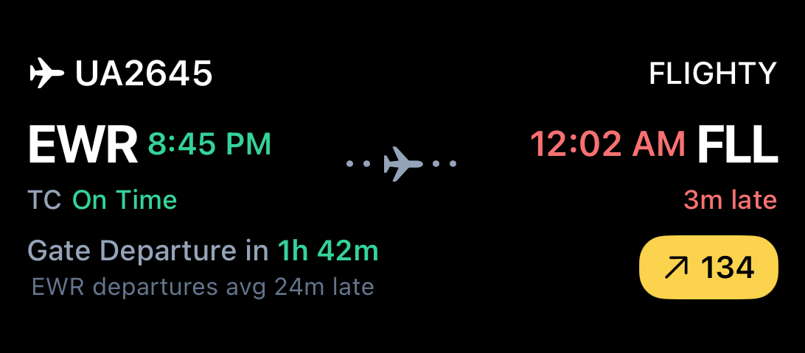
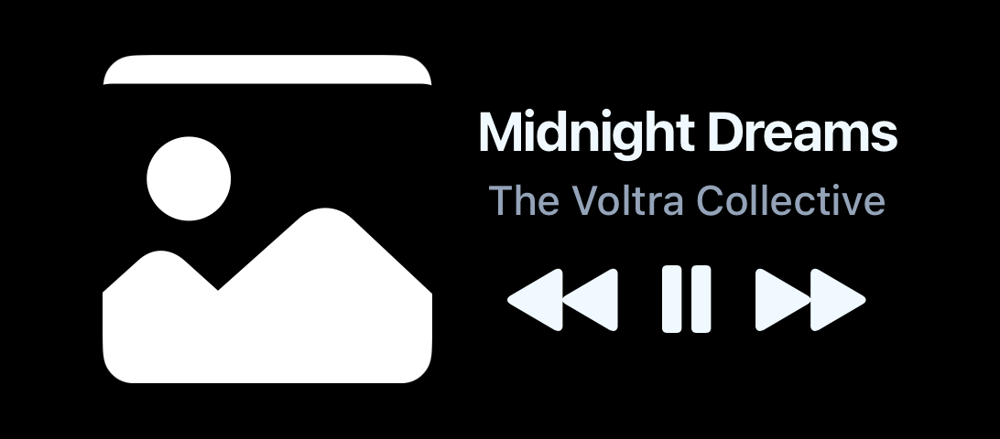
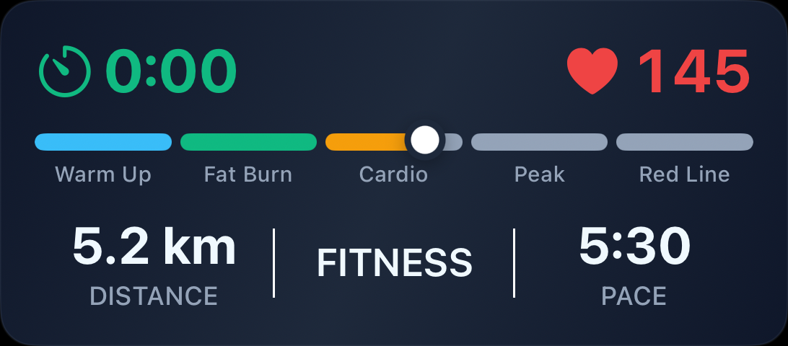
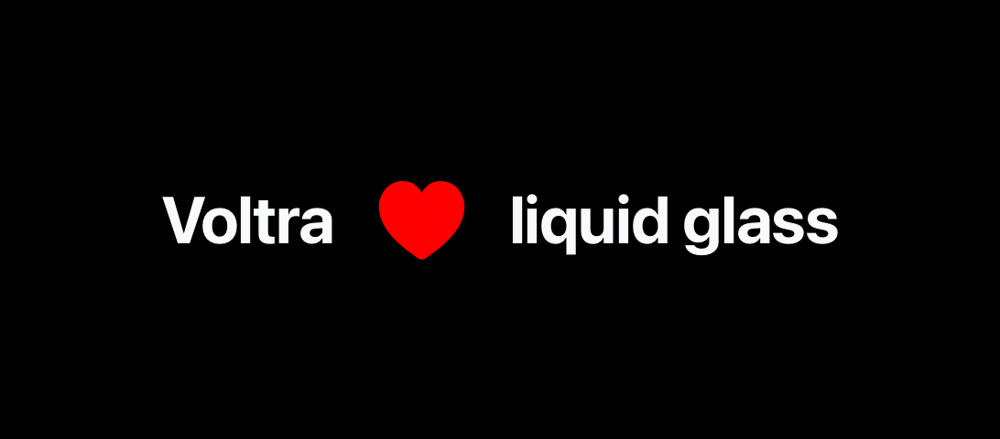
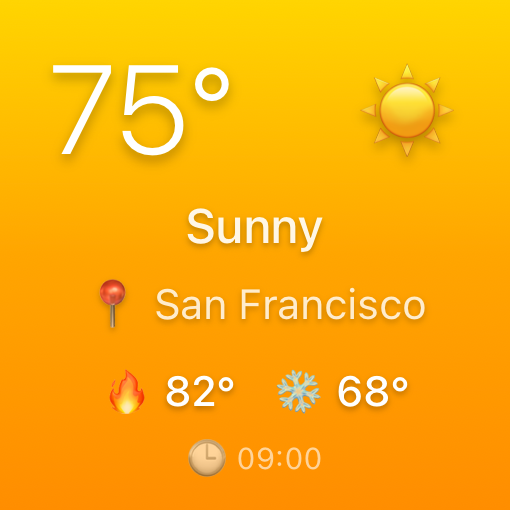
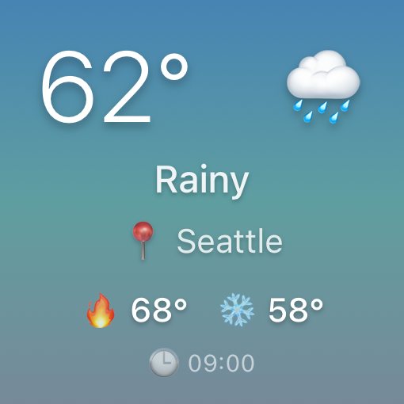
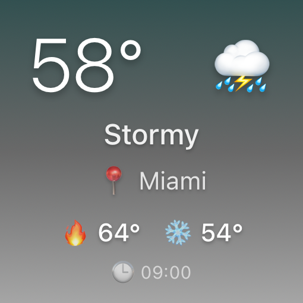
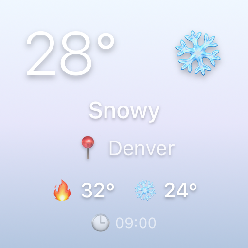
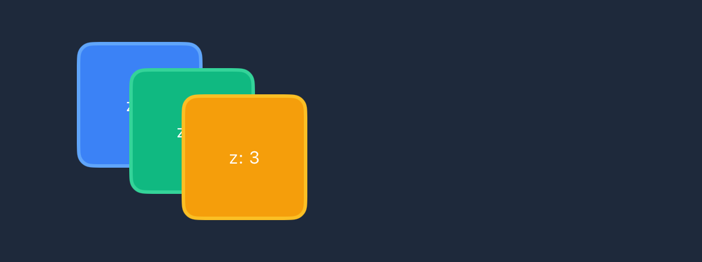

A native-surface UI library, ported to a new runtime, with 95.6% of the code untouched — and the entire SwiftUI/Glance renderer shipped byte-identical.
These iOS Live Activities, Dynamic Island layouts, and home-screen Widgets now render from Lynx JSX — but because the SwiftUI rendering engine is byte-identical, the output is pixel-for-pixel the same as the original React Native version.









Voltra turns React JSX into SwiftUI and Jetpack Compose Glance, so you can ship custom Live Activities, Dynamic Island layouts and Android Widgets without touching native code.
A Callstack-incubated open-source library. JSX → JSON → SwiftUI/Glance.
~32,500 LoC across 7 packages, an Expo config plugin, and native modules.
ByteDance's cross-platform runtime. JS executes on a background thread; UI is native. Not React Native. Different module ABI, different layout primitives, different DSL. But same Reactive mental model.
Live Activities, Dynamic Island, Widgets, and Glance run in out-of-process OS extensions.
They only accept SwiftUI / Compose Glance. No WKWebView. No React Native bridge. No Lynx runtime.
The actual UI rendering must happen natively. The JS framework only ever produces a JSON payload; native code reads that payload and constructs SwiftUI/Glance views.
// JS side <Voltra.VStack> <Voltra.Text>Order #42</Voltra.Text> </Voltra.VStack> ↓ renderLiveActivityToString() ↓ '{"type":"VStack","children":[…]}' ↓ // crosses bridge // Native side (Swift/Kotlin) VoltraParser.parse(json) → SwiftUI.View
This is the key insight. The bridge is small. Almost everything else is shared.
@use-voltra/core · ios · android · serverRenderer, payload compression, JSX components. Framework-agnostic. Depend on react only.
live-activity/api · widgets · ongoing-notification · preloadHooks, API functions. Only call VoltraModule methods. Vendored verbatim into the Lynx package.
lynx-bridge/Promise⇄callback wrapper · GlobalEventEmitter shim · Platform detection. NEW.
VoltraLynxModule.swift · .ktMechanical translation of Expo Module DSL → Lynx @LynxMethod. Bodies delegate to existing impl.
The 19,800 LoC engine that actually turns JSON into pixels. Copied byte-for-byte from upstream Voltra.
Architectural principle (P3) from LYNX_PORT.md:
“The Adapter Pattern Absorbs All Differences.”
All business logic sees the same interface regardless of host framework — Expo or Lynx.
Only 1,440 lines of new code — 662 for the JS bridge adapter, 788 for the Swift + Kotlin native-module shims — to port 32,500 lines of native UI library to a different host runtime.
| Layer | What | Original (RN) | Lynx Port | Reuse |
|---|---|---|---|---|
| L0 | Pure-JS — core, ios, android, server, server-impls | 5,734 | 0 (npm-linked) | 100% |
| L0/1 | Voltra umbrella — renderer, JSX, payload, styles | 4,452 | 0 (npm-linked) | 100% |
| L1 | Client business logic — hooks, widget-api, live-activity | 1,616 | 1,241 (vendored) | ~95% |
| L2 | Bridge adapter (NEW) | 0 | 662 | NEW |
| L3 | Native module registration — Swift + Kotlin | 919 | 788 | REWRITE |
| L4 | SwiftUI + Glance rendering engine | 19,776 | 19,783 (δ<0.1%) | 100% |
| TOTAL | 32,497 | 1,440 NEW + 21,024 reused | 95.6% | |
Six files, all in voltra-lynx/packages/lynx/src/bridge/.
Every Expo→Lynx ABI difference is absorbed here.
NativeModules.VoltraModule into Promise-based VoltraIOSModuleSpec / VoltraAndroidModuleSpecPlatform.OSGlobalEventEmitter → RN-compatible EventSubscriptionNativeModules, GlobalEventEmitter)packages/ios-client/src/VoltraModule.ts — 57 LoC
import { requireNativeModule } from 'expo' const VoltraModule = requireNativeModule<VoltraIOSModuleSpec>('VoltraModule') // Promise-returning methods are auto-generated by Expo. // module.startLiveActivity(json, opts) → Promise<string>
voltra-lynx/.../lynx/src/ios-client/VoltraModule.ts — 17 LoC
import { createIOSModuleAdapter } from '../bridge/index.js' declare const NativeModules: { VoltraModule: Record<string, (...a: any[]) => any> } const VoltraModule: VoltraIOSModuleSpec = createIOSModuleAdapter(NativeModules.VoltraModule)
The adapter is a 270-line file that wraps every method
in new Promise((resolve, reject) => raw.method(args, (r) => …)).
Above it, every line of business logic — useLiveActivity, startLiveActivity,
updateWidget, all 28+ functions — is unchanged.
packages/voltra/ios/app/VoltraModule.swift
AsyncFunction("startLiveActivity") { (jsonString: String, options: StartVoltraOptions?) async throws -> String in return try await self.impl .startLiveActivity( jsonString: jsonString, options: options ) }
voltra-lynx/host/ios/.../VoltraLynxModule.swift
@objc func startLiveActivity( _ jsonString: NSString, options: NSDictionary?, callback: LynxCallbackBlock? ) { let opts = StartVoltraOptions(from: options) Task { do { let id = try await impl.startLiveActivity( jsonString: jsonString as String, options: opts ) callback?(id as NSString) } catch { callback?("ERROR:\(error.localizedDescription)" as NSString) } } }
Pure mechanical translation.
AsyncFunction("name") { … } becomes @objc func name(_:callback:);
async throws → T becomes a Task { … callback?(…) } wrapper.
The 330-line VoltraModuleImpl.swift that does all the actual work — ActivityKit calls,
image preloading, widget timelines — is byte-for-byte identical.
packages/voltra/android/.../VoltraModule.kt
AsyncFunction("updateAndroidWidget") { widgetId: String, jsonString: String, options: Map<String, Any?> -> widgetManager.writeWidgetData( widgetId, jsonString, options["deepLinkUrl"] as? String ) runBlocking { widgetManager.updateWidget(widgetId) } }
voltra-lynx/host/android/.../VoltraLynxModule.kt
@LynxMethod fun updateAndroidWidget( widgetId: String, jsonString: String, options: Map<String, Any?>?, callback: Callback ) { widgetManager.writeWidgetData( widgetId, jsonString, options?.get("deepLinkUrl") as? String ) scope.launch { widgetManager.updateWidget(widgetId) callback.invoke(null as Any?) } }
Same shape on Android: AsyncFunction → @LynxMethod fun … callback: Callback,
and runBlocking → scope.launch { … ; callback.invoke(…) }.
Every VoltraWidgetManager, VoltraNotificationManager,
Glance renderer, parser — all 9,509 lines — is identical.
pluginReactLynx aliases react → @lynx-js/react at build time.
Which means Voltra's JSX components — VStack, Text, Symbol,
Image — work as-is in Lynx.
Voltra's components only use createElement and hooks —
never ReactDOM, never platform-specific APIs.
renderLiveActivityToString() walks the React element tree and
serializes nodes to JSON. The element tree is the same shape no matter
which createElement produced it.
100% Layer 0 reuse via plain npm. No fork, no wrapper, no shim.
// In a Lynx .tsx file: import { Voltra } from '@use-voltra/ios' <Voltra.VStack style={{ padding: '16px' }}> <Voltra.Text>Order #42</Voltra.Text> </Voltra.VStack> // → traverses, serializes, native parses → SwiftUI ✨
Any React library that only touches createElement and hooks
(not DOM) works in Lynx through this alias.
Same trick that makes @tanstack/react-query work in Lynx.
Lynx supports full CSS Flexbox and Android-LinearLayout-style
display: linear. <view> defaults to linear,
so flex: 1 on a child <scroll-view> collapses
to zero height — until you set display: 'flex' on the parent.
One opt-in, and the rest of your RN styles port 1:1.
| Pattern | RN / Web | Lynx (preferred) | Linear fallback |
|---|---|---|---|
| Fill remaining space | flex: 1 |
flex: 1 (parent display:'flex') |
linearWeight: 1 |
| Horizontal row | display: 'flex', flexDirection: 'row' |
same | display: 'linear', linearDirection: 'row' |
| Scroll axis | scroll-y |
scroll-orientation="vertical" |
same |
| Border radius | borderRadius: 12 |
borderRadius: '12px' |
silently ignored |
| Line height | lineHeight: 18 |
lineHeight: '18px' or remove |
18 × font-size gaps |
| Padding shorthand | paddingHorizontal: 16 |
paddingLeft: 16, paddingRight: 16 |
not applied |
| Tap event | onPress / onClick |
bindtap |
no handler fires |
Lesson encoded into LYNX_PORT.md §Lynx CSS Gotchas.
Future agents read it before writing any layout code.
Initially flagged as blocked stretch goals (US-050 / US-051),
live in-app previews of widgets seemed to require Lynx's
requireNativeView equivalent. Turns out the simpler
Custom Element system was sufficient.
// Lynx-side <voltra-preview width="170" height="170" payload={renderWidgetToString(jsx)} />
LynxUIRegister.register( "voltra-preview", VoltraPreviewHostView.self )
Renders Voltra SwiftUI inline inside the Lynx app — not on the home screen, not in the lock screen. Makes the Testing Grounds screens show actual SwiftUI output instead of JSON dumps.
Wraps a UIHostingController on iOS / ComposeView on Android,
subscribes to width prop changes from Lynx, re-renders SwiftUI on payload mutations.
9 testing-ground screens converted live SwiftUI in-app
US-001 to US-061.pnpm monorepo · rspeedy shell · Layer 0 proof-of-import
module-adapter · event-adapter · platform · types — 662 LoC
iOS + Android client packages, business logic copied verbatim
Mechanical Swift + Kotlin translation, delegating to existing impl
xcodegen · CocoaPods · Widget Extension · first end-to-end Live Activity
10 Live Activities · 5 widgets · 14 testing screens
flex+linear coexist · scroll-orientation · borderRadius px · lineHeight
Second pass · pixel-parity with RN Expo example
<voltra-preview> · <voltra-widget-preview> · 9 screens converted
Collapsed into single @use-voltra/lynx · Pods removed from git
27,395 lines of code across 64 commits and ~61 stories.
A single developer with Claude Code, structured agents, and a stack of guardrail markdown files.
The harness is the product.
The work was broken into four written PRDs. Each PRD enumerates user stories
US-001 … US-NN with explicit acceptance criteria. Each story
maps to exactly one commit, prefixed with its ID.
A user story is a cache-friendly unit of agent work — small enough to fit in one context window, with explicit acceptance criteria the agent can self-verify against.
The (US-XXX) commit suffix becomes a permanent audit trail:
run git log --oneline | grep US-053 and you find the
Positioning Screen conversion in one line.
Cost of context drift drops to zero — each story is a fresh start with the PRD as ground truth.
$ git log --oneline | grep 'US-0' | wc -l
61
Architectural principles are encoded as P1..P5 in
LYNX_PORT.md. Every agent reads it before touching code.
Mechanical translation tables let agents do the right thing without re-deriving it.
| Expo Pattern | Lynx Equivalent |
| AsyncFunction(...)
→ @LynxMethod fun(... callback: Callback)
| requireNativeModule<T>
→ createModuleAdapter<T>(NativeModules…)
| sendEvent(name)
→ lynxContext.sendGlobalEvent("voltra:" + name)
| Platform.OS → __PLATFORM__ build constant
When a new agent dispatches on a fresh story, it doesn't have to discover
how the bridge works. It reads three things — CLAUDE.md,
LYNX_PORT.md, the relevant PRD section — and produces code
that matches the architecture.
Personal CLAUDE.md additionally captures lessons from past mistakes:
说不清解决什么问题的改动，就不该做. “If you can't name the concrete bug your change fixes, don't make it. ‘More robust’ is not a reason.”
For non-trivial changes, the harness gates the work behind a written spec and a written implementation plan, each in its own commit. Then — and only then — the implementation commits land.
| Commit | Subject | Type |
|---|---|---|
14e732d | docs: spec for voltra-lynx API surface & project cleanup | SPEC |
4141225 | docs: implementation plan for API surface cleanup | PLAN |
9798e71 | refactor: create @use-voltra/lynx package with bridge subpath | EXEC |
791b239 | refactor: move ios-client into @use-voltra/lynx package | EXEC |
c9b04d4 | refactor: move android-client into @use-voltra/lynx package | EXEC |
cce1ecf | refactor: remove old packages, dead files, and Ralph artifacts | EXEC |
The brainstorming → design-doc → plan pipeline (from the
superpowers:brainstorming and writing-plans skills)
forces the agent to think before typing. By the time implementation starts,
the decisions are already made and the agent's job is mechanical.
For the Android port (the second half of the project), execution was handed off to Ralph Loop — an autonomous agent that reads the PRD, picks the next unfinished story, implements it, runs verification, commits, and repeats.
.claude/ralph-loop.local.md
--- active: true iteration: 6 max_iterations: 0 # unbounded started_at: "2026-04-26T13:19:56Z" --- Implement the Voltra Lynx Android port following the PRD at tasks/prd-voltra-lynx-android.md. The JS bridge layer is already complete. Scaffold Android host app with Sparkling, implement VoltraLynxModule.kt, verify all 5 Android demos work end-to-end. Follow LYNX_PORT.md architectural principles strictly.
The architectural seam was already proven on iOS. Android is the same problem with a different vocabulary — exactly the kind of predictable, parallel work loop-style agents excel at.
Pattern: stand up a strong harness on platform A by hand, let the loop port to platform B.
Independent research is dispatched to background sub-agents. The main thread stays cache-warm; the sub-agents burn fresh context against narrow questions.
Anthropic's prompt cache has a 5-minute TTL. Sleeping past 300s on the main thread means reading the full context uncached — slow and expensive.
Sub-agents don't share that cache, so dispatching them costs nothing extra — and the main thread keeps moving while they work.
Rule of thumb: if 2+ tasks are independent (no shared state, no sequential dependency), they should run in parallel.
// Single message · 3 tool calls <Agent description="loc audit" /> <Agent description="narrative" /> <Bash command="find ..." />
Domain knowledge is captured as agent-readable references that survive across sessions — no need to re-explain the project on each prompt.
The agent loads SKILL.md on relevant triggers and pulls
deeper references on demand. Tribal knowledge → committed file → reusable.
Per-project memory directory with typed entries:
user, feedback, project, reference.
When a session learns something durable — “the iOS host uses CocoaPods Lynx 3.7.0, not the internal template” — it writes a memory. The next session reads it on boot.
The result: a session in week 4 inherits the breakthroughs of week 1 without paying for them again.
memory/ ├── MEMORY.md # index ├── lynx-host-setup.md # project ├── css-gotchas.md # reference └── react-alias-pattern.md # reference
Every wrong turn becomes a written principle. The personal
CLAUDE.md grows a section per bug class — so the next agent
doesn't repeat it.
If you can't name a specific, reproducible bug — don't change it. “More robust” and “more standard” are not reasons.
Born from: vue-lynx migration, a “cleaner” path-resolve refactor that introduced a new pnpm-symlink bug.
Ask: what does this pattern depend on? Does my environment satisfy that premise?
Born from: lynx-stack vs vue-lynx — same pattern, different architecture; the pattern didn't transfer.
git stash first. If the error reproduces on the parent commit, it's pre-existing.
Otherwise: you caused it.
Born from: a build error blamed on the upstream, that was actually introduced by the very change being verified.
pnpm build green + pnpm test green ≠ shippable. Run the example end-to-end. Pack the npm package. Open the app.
Born from: a migration where unit tests passed but the example app build broke at runtime.
A reusable template for the next “take this library to a new runtime” project.
What is framework-specific vs framework-agnostic in the source? Draw the layer model. The smaller you can keep the framework-bound region, the cheaper the port.
Don't fork upstream code. Vendor it, write one bridge module, and absorb every ABI mismatch in one place. Promise⇄callback, EventEmitter, platform detection — all in one file.
Write P1..PN principles. Add translation tables (Expo→Lynx, RN→Lynx CSS, etc.). Every agent reads this before code. Compounding returns.
Each story has explicit acceptance criteria, fits in one context window, and produces exactly one commit. The (US-NNN) suffix becomes a permanent audit trail.
Non-trivial work gets a docs: spec for X commit and a docs: implementation plan for X commit before any refactor lands. Forces thinking ahead of typing.
Snapshot tests catch what the type-checker doesn't. Pack the package. Open the example. Tap the buttons. Compile ≠ ships.
iOS by hand; Android by Ralph Loop. Once the agent knows the pattern, parallel platforms become a queue.
The React alias, the flex-vs-linear scroll-view rule, the LynxModule Swift quirks — all live in LYNX_PORT.md now. Next agent: free wins.
The library is the library. The runtime is just an adapter. The harness is the multiplier.
voltra · voltra-lynx · LYNX_PORT.md · CLAUDE.md · ralph-loop · skills/voltra · superpowers